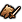

Договорились
Состояние — что действует на отряд сейчас решено 30.10
словарь — по симулятору: config/nn/effects.json (order) · tools/nn/sim/effects.py, morale.py, impact.py, regen.py, missile.py, stealth.py · образец: генерал — tools/nn/model/effects.py
- Закрытый словарь того, что действует на отряд в эту секунду и включается-выключается по ходу боя. Постоянные свойства (страх, ужас, упор как умение) — в паспорте; кнопки — в карточке «Способности».
- У своих 2 числа на эффект: есть / нет (0/1) и сколько секунд осталось (доля от срока, 0–1). Итого 25 × 2 = 50.
- Врагу — всё, что видит игрок (решение пользователя 30.10): значки на карточке вражеского отряда и то, что видно на поле (выстрелы, падения снарядов, натиск, упор). Секунд у врага нет никогда. Итого у врага 23 (по 1 числу), остальное — маска.
- Правило: каждое поле врага получаемо из игры через мост тем же правилом, что в симуляторе — иначе сеть, выученная в симуляторе, в игре увидит пустоту. Где игра не отдаёт флаг напрямую, стоит «мост: считается из …» — это задание кодеру моста.
- «Держать строй»: у лорда это способность (карточка «Способности»), у его отрядов рядом — эффект здесь.
- Как у генерала: словарь → маленькая сеть «анализ эффектов» → карточка эффектов (~32 числа). Она не складывается с карточкой отряда, а приклеивается к ней (склейка строк) — чтобы эффекты не размывались. Блоки «анализ» и «склейка» пока не рисуем.
- Словарь только растёт (новое — в конец), как
orderв effects.json: старая сеть грузится с нулевыми весами для новых. - В строке: свой — 69 + (22 + 5 + 50 + 15) + 24 = 185; враг — 69 + (22 + 5 + 23 + 15) + 16 = 150, остальное маской.
| Эффект | Что делает | В симуляторе | Свой | Враг | Врагу | |
|---|---|---|---|---|---|---|
| яд | скорость, урон в рукопашной и стрельбой ×0,85; 10 с после каждого попадания | effects.py · cfx*_s | 2 | 1 | да | |
| заражение (кадило) | контактный эффект кадильщиков и чумной катапульты, 10 с | effects.py · cfx*_s | 2 | 1 | да | |
| подавлен | контактный эффект Пушки Крысолинга, 10 с | effects.py · cfx*_s | 2 | 1 | да | |
| щитолом | контактный эффект джезайлей, 10 с | effects.py · cfx*_s | 2 | 1 | да | |
| бешенство | действует, пока мораль не ниже половины лидерства | effects.py · fx_on | 2 | 1 | да | |
| сила в числе | снимается, когда здоровья меньше 50 % начального | effects.py · fx_on | 2 | 1 | да | |
| удрать | включается, когда отряд колеблется или бежит | effects.py · fx_on | 2 | 1 | да | |
| раны одиночки | включается, когда здоровья меньше 25 % | effects.py · fx_on, low_s | 2 | 1 | да | |
| сила кающихся | игра включает сама: 20 с, снова — после 3 с проигранной рукопашной | effects.py · fxt*_on / _cd | 2 | 1 | да | |
| пороховая выдержка | после 10 с на месте; снимается на ходу | effects.py · fx_on, fxd_s | 2 | 1 | да | |
| регенерация порезана огнём | после удара огнём регенерация вдвое меньше, 10 с | regen.py · burn_s | 2 | 1 | ? да | |
| сеть-ловушка | на враге ближе 35 м от отряда с сетями | effects.py · fx_rx | 2 | 1 | да | |
| под аурой «Держать строй» | свой лорд в 35 м: +5 защиты, +4 морали (у самого лорда это способность — карточка «Способности») | effects.py · fx_rx | 2 | 1 | да | |
| воодушевлён лордом | +4 лидерства в 70 м от своего лорда | morale.py | 2 | 1 | да | |
| страх рядом | −8 морали: враг со «страхом» в 20 м | morale.py | 2 | 1 | да | |
| бежит от ужаса | мораль < 13 и монстр с «ужасом» в 5 м: бежит 14 с | morale.py · ter_s | 2 | 1 | да | |
| невосприимчив к ужасу | после бегства от ужаса — 85 с | morale.py · ter_imm | 2 | 0 | нет — признака нет; сеть помнит сама по памяти снимков | |
| под огнём артиллерии | −8 морали на 30 с: снаряд выпущен по отряду или упал рядом | morale.py · art_s | 2 | 1 | да · мост: считается из выстрелов и падений снарядов рядом с отрядом | |
| попадание артиллерии | −10 морали на 30 с: снаряд ранил бойцов | morale.py · artd_s | 2 | 1 | да · мост: считается из падений снарядов и потерь бойцов в тот же миг | |
| в натиске | сила натиска 1 → 0 за 13 с; мораль +15 на время натиска | state charge, chm_s | 2 | 1 | да · мост: считается из скорости, курса и касания — тем же правилом, что в симуляторе | |
| упор | стоит в строю на своих местах — бойцы упираются против натиска | impact.py | 2 | 1 | да · мост: считается из «стоит, не движется, враг набегает» — тем же правилом, что в симуляторе | |
 | строй проломлен | крупный враг въехал в строй, первая шеренга лежит | impact.py · ride, kd_q, kd_t | 2 | 1 | да ? · мост: лежащие бойцы по местам вблизи — проверить, видны ли |
| замедлен попаданиями | попадания пуль замедляют маленькие строи | missile.py · hs_s | 2 | 1 | да · мост: считается из скорости ниже паспортной под обстрелом | |
| чужая способность или заклинание на мне | аура, бафф друга или чары врага | abilities · ab_rx, snap_s | 2 | 1 | да | |
| скрыт | враг его не видит (у врага — строки нет вовсе) | stealth.py · hid | 2 | 0 | нет — строки нет: это и есть «скрыт» (маска) | |
| Всего | 25 × 2 у своих; у врага — по 1 числу (без секунд) | 50 | 23 |
«да · мост: считается из …» — игра флаг не отдаёт, мост считает его сам тем же правилом, что симулятор. «? да» / «да ?» — даём, если мост подтвердит. «нет» — признака в игре нет.
Проверено по коду
- Сеть отряда действующих эффектов не видит. В её входе (
tools/nn/unit/view.py: RAW 33, ROW 27) нет ни одного — только постоянные свойства из паспорта. - Генерал видит: на каждый эффект «есть у отряда» + «действует» (0/1, без секунд), ауры и чары на отряде, что они меняют в числах (
observation.py: RECEIVED, FX_STATS, MAGIC).
Открытые вопросы
- Дыра личного уровня: отряд не видит, что он отравлен (и что под бешенством, под огнём артиллерии, бежит от ужаса…). Чинить у отряда — отдельное решение пользователя.
- Регенерация, порезанная огнём: показывает ли игра значок на вражеском отряде — проверить по мосту.
- Секунды у своих. Симулятор их знает; таймер яда и других контактных эффектов у своих игра показывает? — проверить по мосту.
- Перекрытие с живой частью: «бежит от ужаса» видно и флагом «бежит». Оставить оба или одно — не обсуждали.